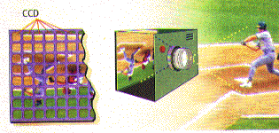

Linear arrays capture an image by scanning it one column of pixels at a time, making them impractical for capturing moving images. They produce the highest-resolution images.*
Area Array Operation
Digital Cameras, unlike conventional cameras, use CCD (Charged Coupling
Device) technology rather than film to capture images. CCD's are photoelectric
sensors that convert light to electricity. Each sensor creates a voltage
that varies with the amount of light received. Individual CCD elements are
arranged in an array, and each element creates a pixel in the captured image.
There are two types of array's, linear and area. The cameras used within
the TEd Dept., use area arrays. The area array captures the entire image
in one exposure without having to move the array. Is this technical? You
bet! For practical purposes, the area array allows for strobe use (flash),
but also returns less resolution. The greatest area array resolution is
2.048 x 2.048 pixels, whereas the greatest linear array can produce resolutions
of 7,500 x 6,000 pixels. The cannon Xapshot and Apple Quicktake can both
produce images of 320x240 pixels, but the Apple Quicktake can also produce
images of 640 x 480. Of course the higher the number the greater the resolution.
Linear Array Operation
Linear arrays capture an image by scanning it one column of pixels at a
time, making them impractical for capturing moving images. They produce
the highest-resolution images.*
Area Array Operation

Click here to learn how to use the Sony Digital Cameras available in our Dept.